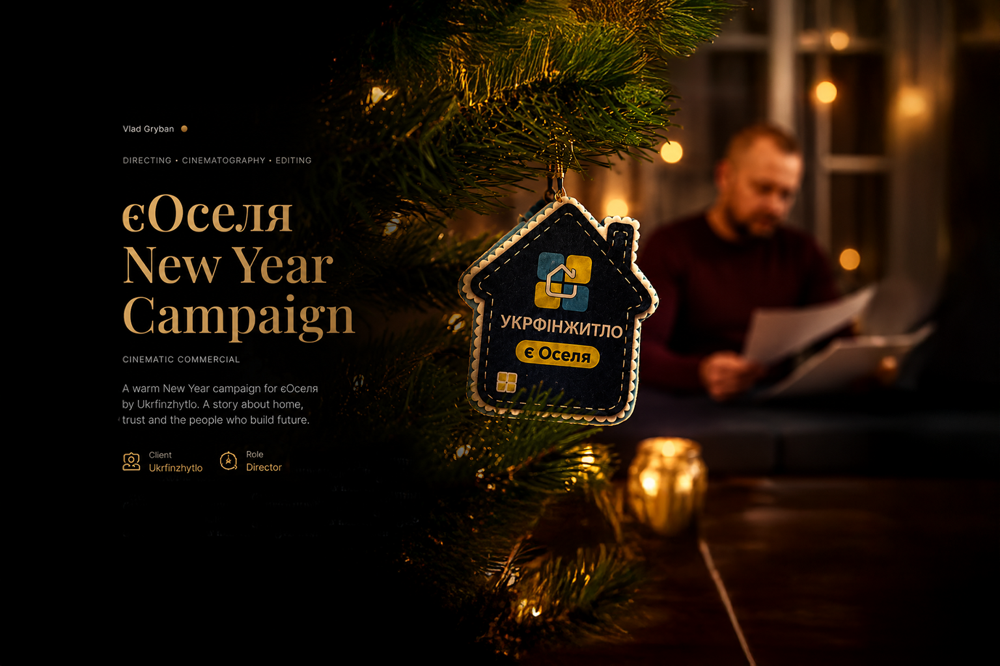
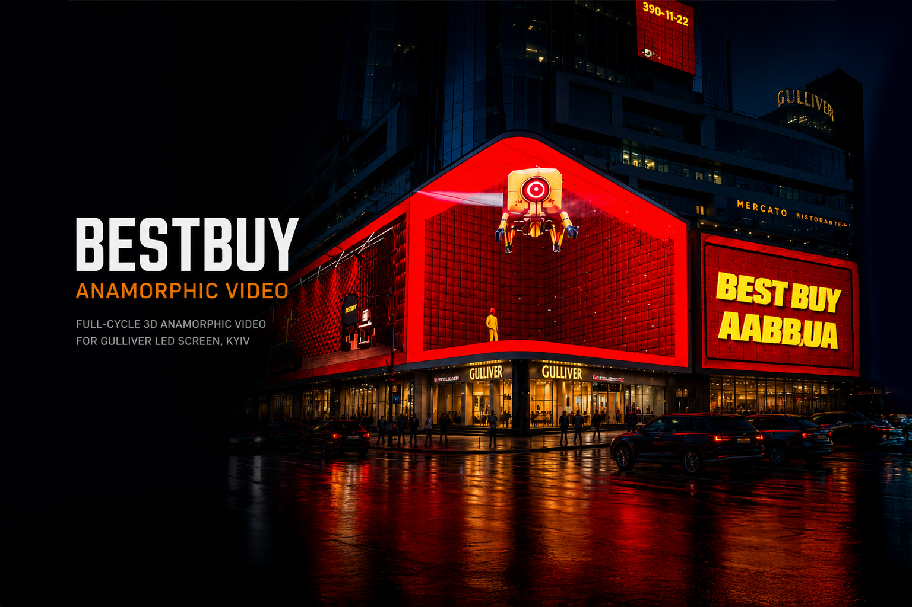
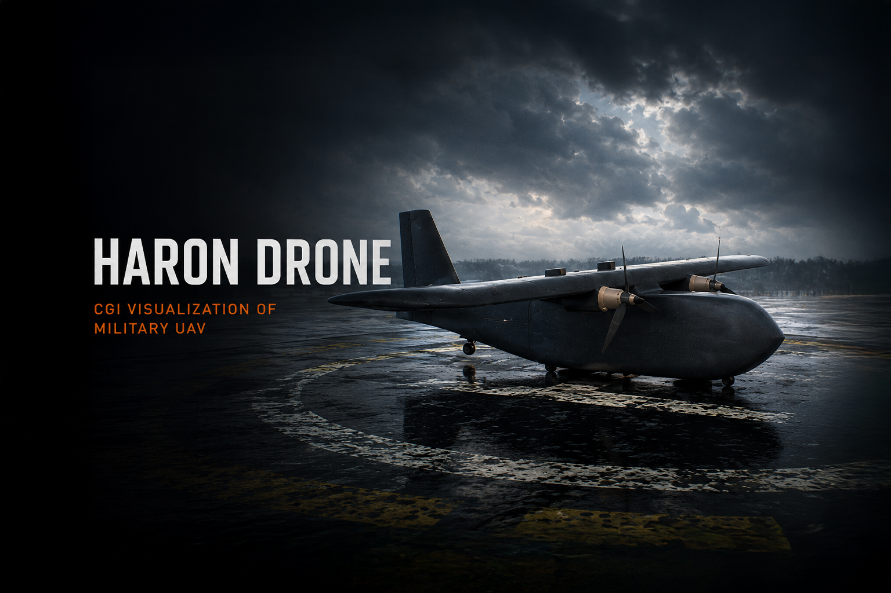
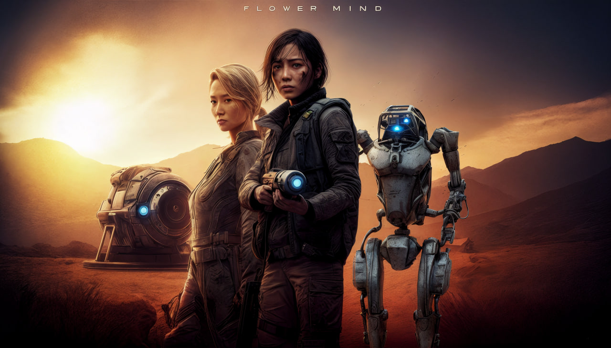
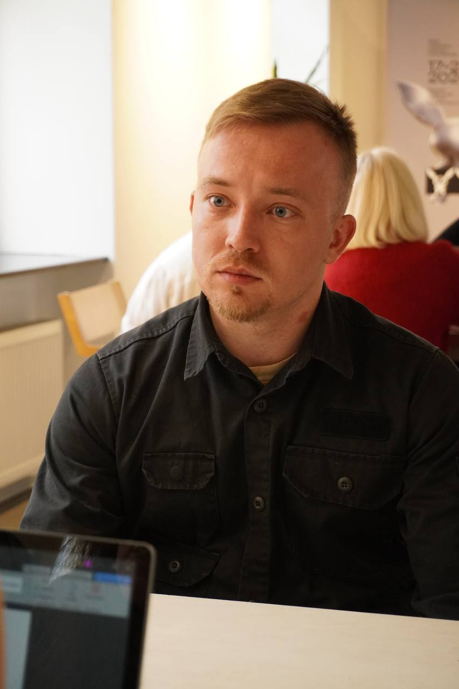

2025 • Commercial
eOselya — New Year Campaign
Warm cinematic holiday commercial created for Ukrfinzhytlo. Direction, cinematography, editing and VFX production.
DIRECTOR • VFX SUPERVISOR • CG ARTIST
Ukrainian director and CG artist focused on cinematic commercials, immersive CGI experiences, animated storytelling and high-end VFX production.
Creating cinematic experiences through directing, CGI, VFX supervision and emotionally driven visual storytelling.
SELECTED WORKS

Warm cinematic holiday commercial created for Ukrfinzhytlo. Direction, cinematography, editing and VFX production.

Full-cycle anamorphic LED video designed for one of Kyiv’s largest media facades.

CGI visualization of a military UAV based on engineering drawings and references.

Diploma animated film combining directing, worldbuilding, motion capture and CGI storytelling.

ABOUT
I’m Vlad Gryban — a Ukrainian director, VFX supervisor and CG artist based in Kyiv (GMT+3).
I specialize in cinematic storytelling, CGI production, motion design and immersive visual experiences. My background combines directing, editing, VFX, animation and commercial production pipelines.
Experienced in both independent and collaborative productions, I focus on creating atmospheric visuals, strong cinematic language and emotionally engaging worlds across commercials, animated films and experimental digital projects.
EDUCATION
Bachelor’s Degree at Kyiv University of Culture. Diploma project: “Flower of Mind” — sci-fi animated film developed through screenwriting, visual language, motion capture, CGI and AI-assisted workflows.
CERTIFICATION
Certified in Architectural Visualization using 3ds Max. Skilled in rendering pipelines with Corona Renderer, V-Ray, Chaos Vantage and Redshift.
CONTACT
Open for commercials, cinematic CGI production, VFX supervision and experimental visual storytelling.